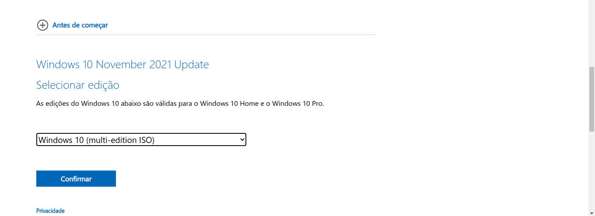
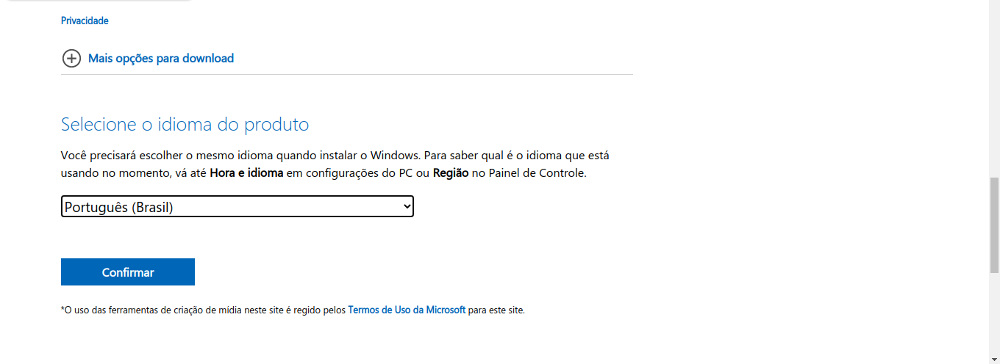
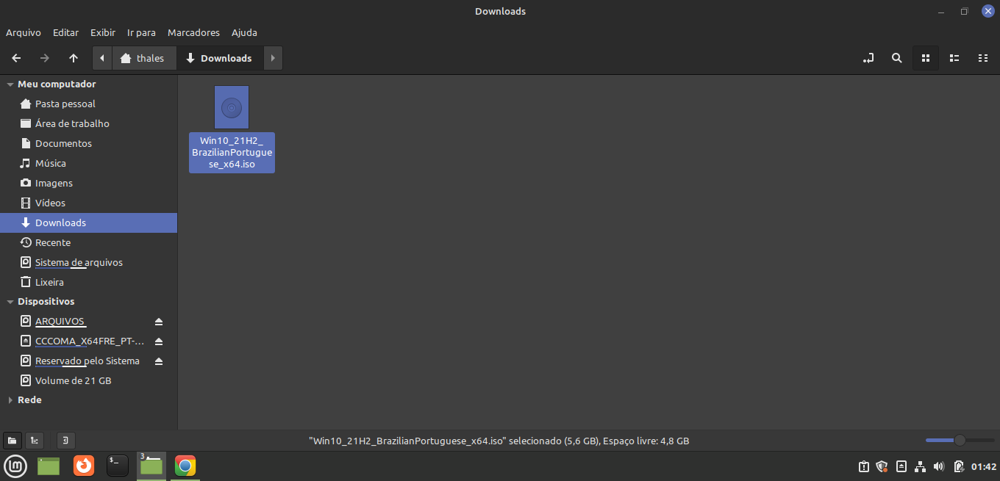

Como baixar a imagem de disco do Windows usando o Linux
Alguns passos dentro do Site da Microsoft mudam para baixar o arquivo ISO do Windows dependendo do qual Sistema Operacional você estiver utilizando.(coisas da Microsoft, enfim)
Nesse tutorial vou ensinar como você fazer o download da ISO do Windows caso você esteja utilizando Linux. Aqui eu ensino como baixar a ISO do Windows usando o Windows.
-
No Site da Microsoft selecione a ISO que deseja baixar e clique em "Confirmar".

-
Selecione o idioma clique em "Confirmar".

-
Selecione o tipo da ISO em 64 bits ou 32 bits, se o seu computador for mais novo selecione a versão de 64 bits, se ele for antigo selecione a opção de 32 bits e espere o download ser concluído.

-
Após concluído, encontre a ISO baixada, (geralmente ela fica no diretório de downloads) aí é só mover para a mídia bootável feita com Ventoy.

Agora você pode baixar a ISO do Linux e colocar no sua mídia bootável junto com o seu Windows.
Voltar para o início da páginaVá para o início do dual boot